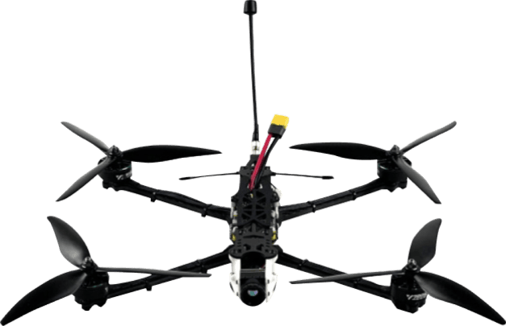

<section class="card__section" id="card">
    <div class="container">
        <div class="card__section-wrapper">
            <div class="card__block">
                <div class="card__decor card__decor-1"></div>
                <div class="card__left">
                    <h2 class="card__title">
                        Особливості рішення:
                    </h2>
                    <div class="card__item" data-aos="fade-right">
                        <div class="card__item-top">
                            <span class="card__item-number">1.</span>
                            <h3 class="card__item-title">FPV-дрон:</h3>
                        </div>
                        <p class="card__item-text">
                            Оснащений програмним забезпеченням <span>Betaflight</span> для максимальної стабільності та точності керування.  
                        </p>
                    </div>
                    <div class="card__item" data-aos="fade-right" data-aos-delay="200">
                        <div class="card__item-top">
                            <span class="card__item-number">2.</span>
                            <h3 class="card__item-title">ACK:</h3>
                        </div>
                        <p class="card__item-text">
                            АСК використовує машинний зір, що дозволяє працювати <span>без GPS</span> і забезпечує захист від засобів радіоелектронної боротьби (РЕБ).    
                        </p>
                    </div>
                    <div class="card__item" data-aos="fade-right" data-aos-delay="400">
                        <div class="card__item-top">
                            <span class="card__item-number">3.</span>
                            <h3 class="card__item-title">Адаптивність інтеграції:</h3>
                        </div>
                        <p class="card__item-text">
                            Підтримує різні <span>модулі для ретрансляції</span> керування та відео, що забезпечує гнучкість у використанні.  
                        </p>
                    </div>
                    <div class="card__item" data-aos="fade-right" data-aos-delay="600">
                        <div class="card__item-top">
                            <span class="card__item-number">4.</span>
                            <h3 class="card__item-title">Ретрансляція протоколу управління:</h3>
                        </div>
                        <p class="card__item-text">
                            Підтримує передачу протоколу Crossfire через модулі <span>ELRS і TBS</span> для безперебійного управління дронами.  
                        </p>
                    </div>
                </div>
                <div class="card__right">
                    <div class="card">
                        
                        
                        <p class="card__text">
                            Інноваційний дрон-ретранслятор з унікальною технічною реалізацією: оснащений промисловим комп’ютером, алгоритмами автономного утримання позиції та азимуту, системою ретрансляції відеозв’язку й управління. 
                        </p>
                        <a href="#order" class="order__btn">
                            Замовити
                        </a>
                        <a href="#" class="card__info">
                            Презентація
                        </a>
                        <div class="card__elems">
                            <span class="card__elem"></span>
                            <span class="card__elem"></span>
                            <span class="card__elem"></span>
                            <span class="card__elem"></span>
                        </div>
                    </div>
                </div>
            </div>
            <div class="card__decor card__decor-2"></div>
        </div>
    </div>
</section>